Project 05 — Digital Fabrication
Formation
From pattern to spatial depth
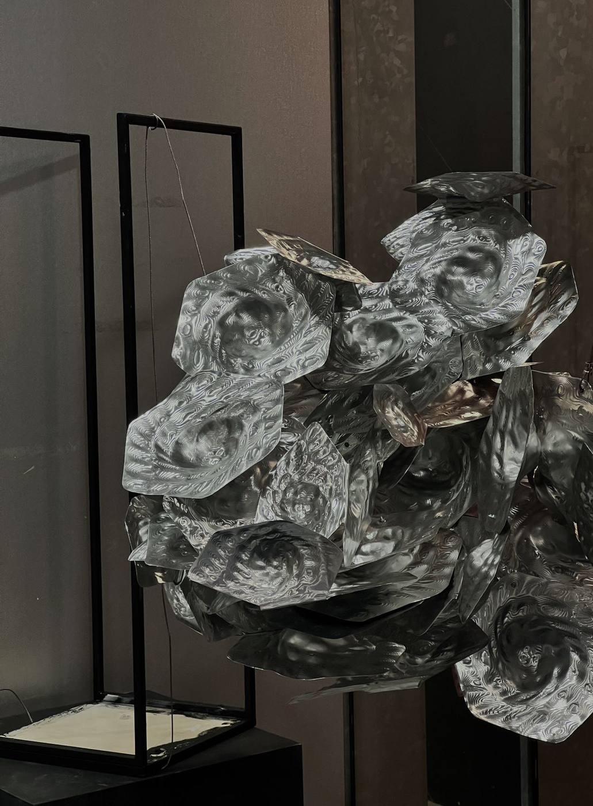
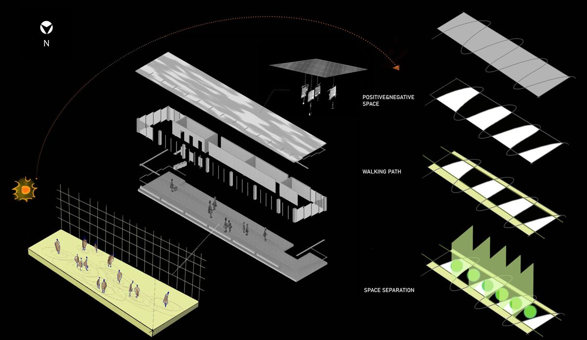
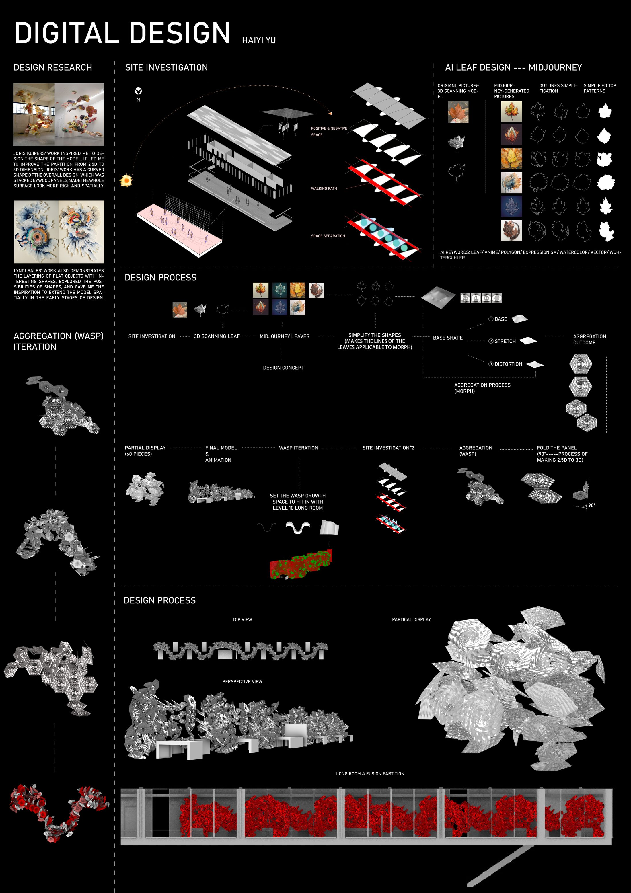
Future partition
A project exploring how scanned natural forms and AI-generated morph patterns can be transformed into three-dimensional partitions. Through iterative layering and aggregation, the work shifts from 2.5D surfaces to volumetric assemblies. I contributed by designing the morph patterns and programming workflows, enabling the partitions to combine spatial rhythm, depth, and shadow.
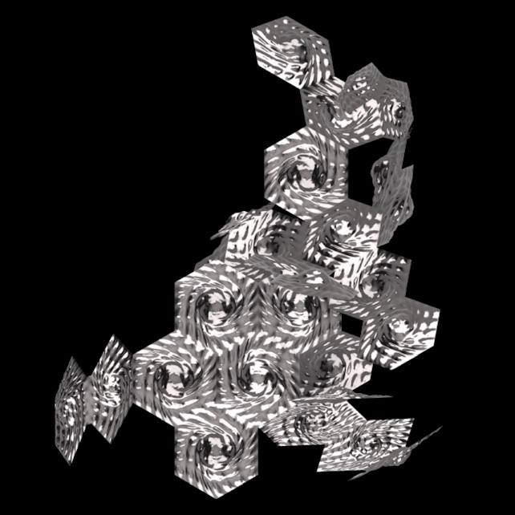
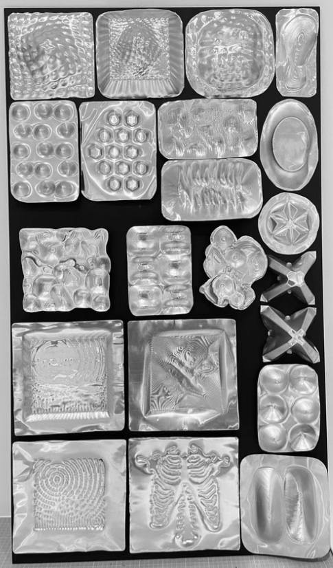
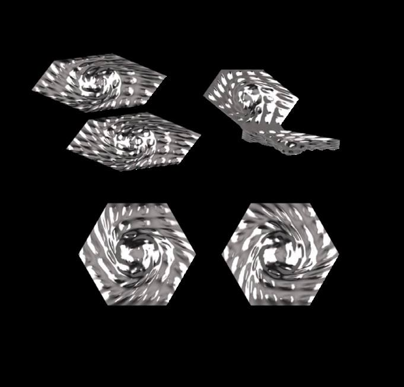
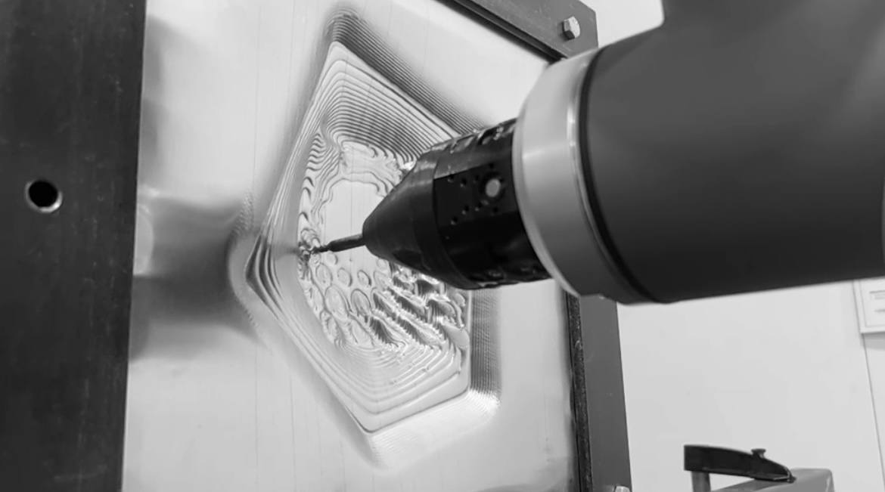
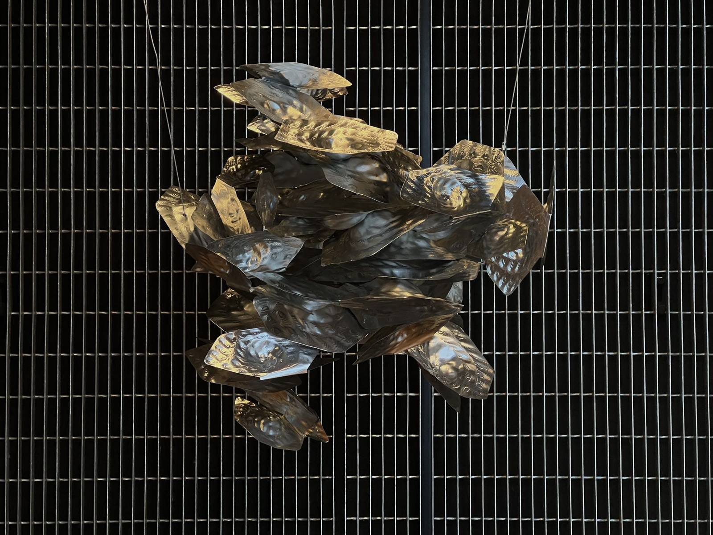
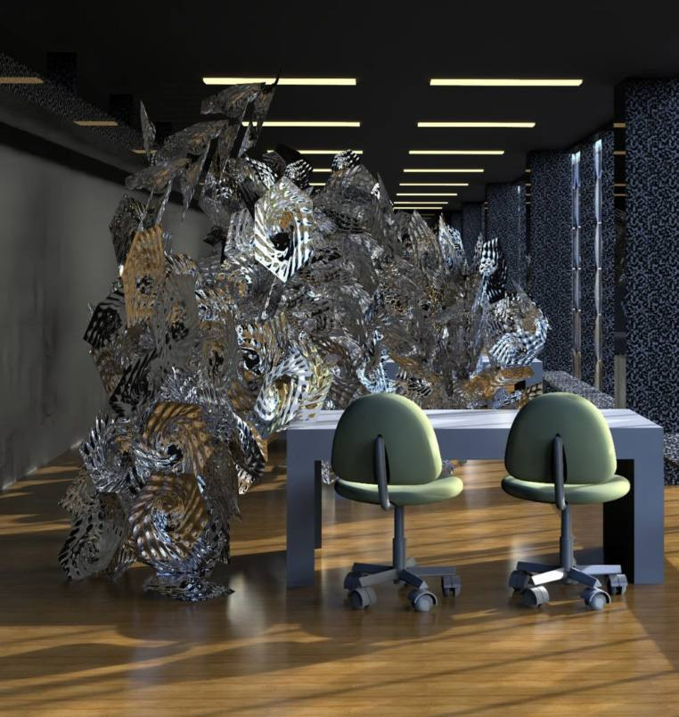
Cantilevered
swivel chair
This project explores a cantilevered swivel chair driven by a gear-based rotation mechanism, realised through the combined use of bent veneer lamination and digital fabrication. Veneer is not treated as a surface finish but as a structural material that actively participates in load-bearing and motion control.
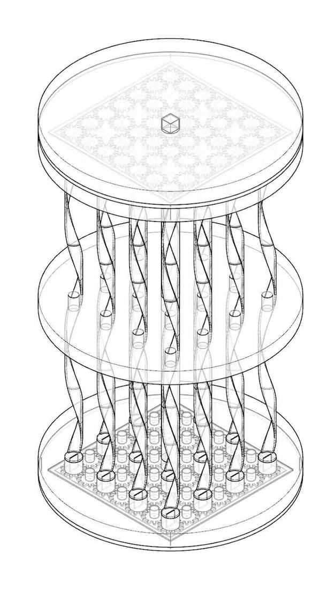
The chair — full structure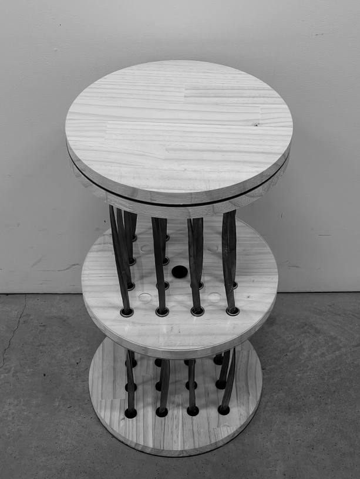
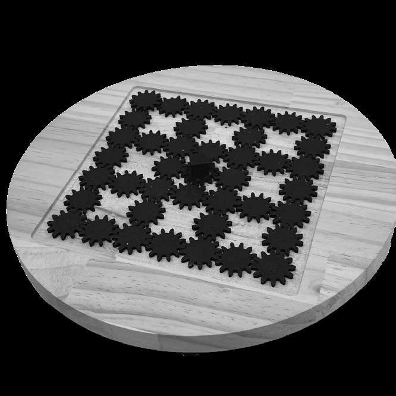
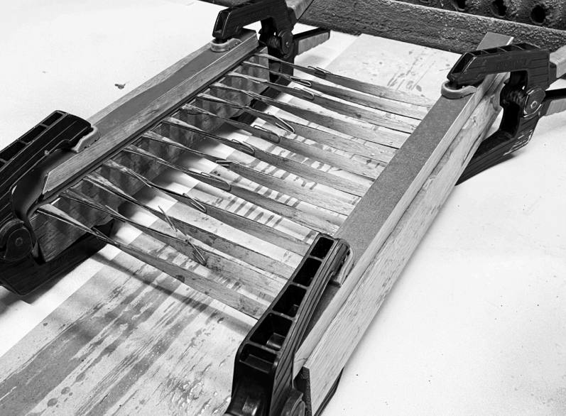
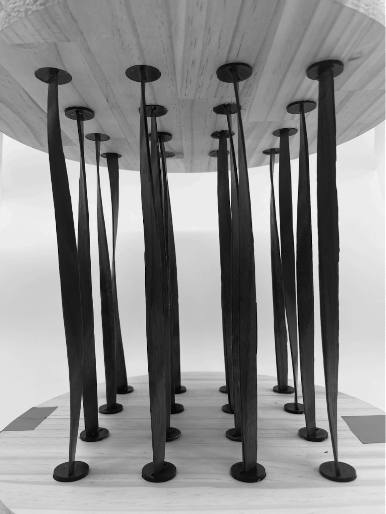
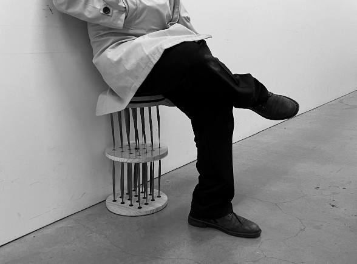
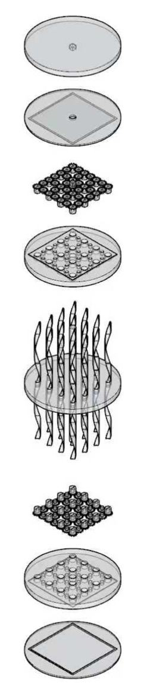